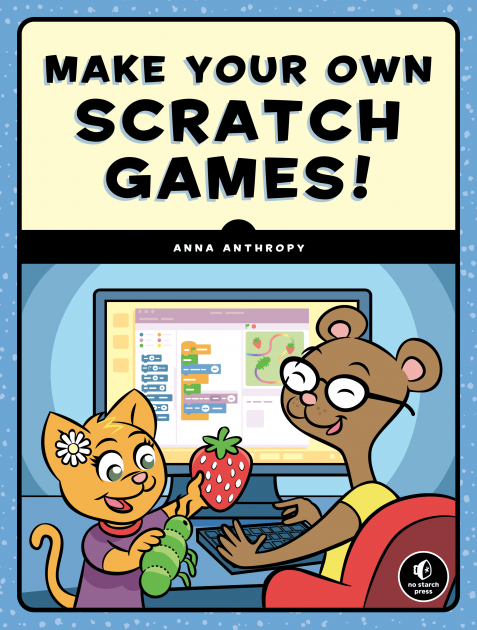

Scratch is a browser-based development environment that lets you quickly and easily create games using programming blocks. (They're kind of like Legos for code!) By the end of this week, you will have created your own game in Scratch that you can share with others online.
This week's workshop is based on the book Make Your Own Scratch Games!, written by Anna Anthropy and published by No Starch Press. You will get a copy of the book if you attend the workshop! (You can also buy the book from No Starch Press or buy it from Amazon).

Here's a Scratch game created for a Family Saturday event at Watershed Management Group. Can you remix this game to make it better?
Here what we'll be doing this week:
Monday, 19 June: Scratch basics
We'll get started with Scratch by creating a game about a hungry bug eating a leaf
Learn how to use the Scratch editor, how to add sprites and backgrounds, and how to make sprites move
Tuesday, 20 June: Collecting items and avoiding obstacles
Starting with our hungry bug game, we'll remix it to add multiple items to collect and obstacles to avoid
We'll also make the game more challenging by increasing the difficulty over time
We'll end the game by having the bug transform into a butterfly, if the right conditions exist
Wednesday, 21 June: Making a platformer game
For the rest of the week, we'll build a platformer game, where the player controls a character that can jump and move left and right
We'll start the game today and add more details tomorrow
Thursday, 22 June: Level design
What kind of platform game doesn't have multiple levels?
We'll add some levels to our game today
Friday, 23 June: Make your own game
Today is your chance to make your own game!
You can start from scratch (pun intended) or remix one of the games we've made this week
We'll also talk about how to share your game with others